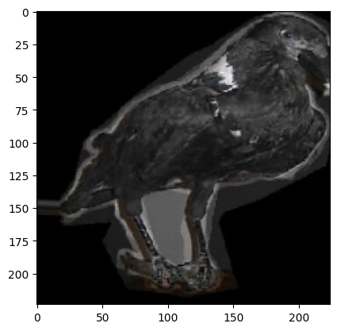
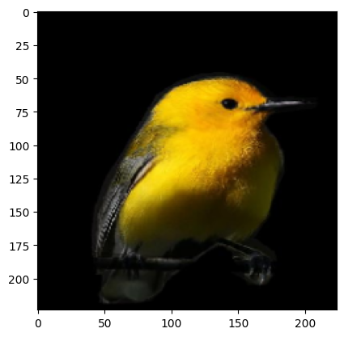
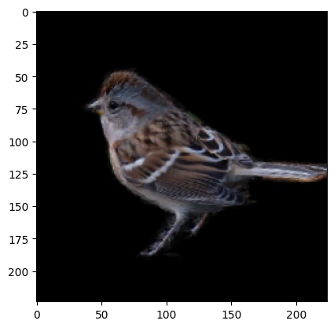
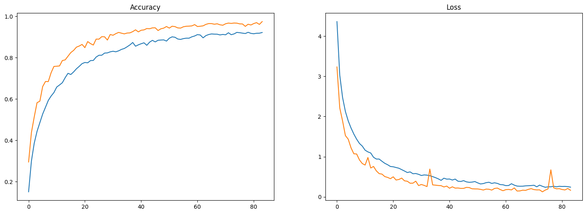
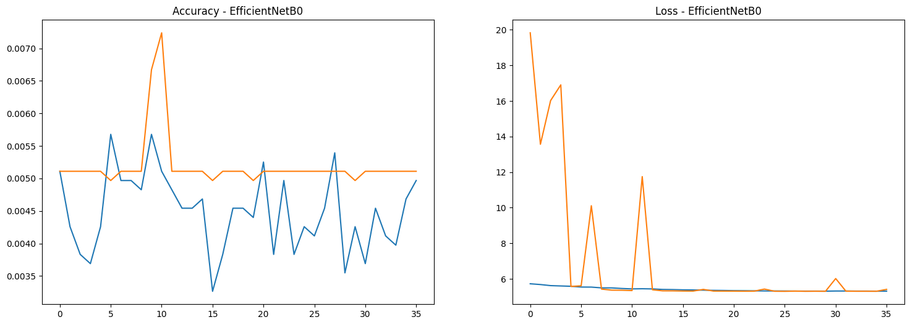
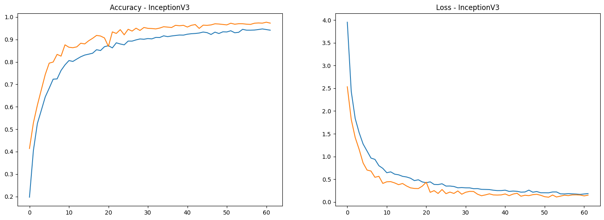

In this tutorial, we will explore how to use transfer learning to classify bird species using popular pre-trained models like InceptionV3, VGG16, and InceptionResNetV2. Transfer learning allows us to leverage the knowledge gained from large datasets like ImageNet and apply it to our bird species classification task, saving us time and computational resources.
Instead of training a model from scratch, which can be time-consuming and require a large dataset, transfer learning helps by:
In this tutorial, we will demonstrate how to load pre-trained models, modify them for our specific classification task, and fine-tune them using a bird species dataset.
Basic knowledge of deep learning and Keras.
Understanding of convolutional neural networks (CNNs) and image classification.
A dataset of bird species, which should be organized in a folder structure like:
birds/
├── train/
│ ├── species_1/
│ ├── species_2/
└── validation/
├── species_1/
├── species_2/Let's begin by loading our dataset and pre-trained models.
Before starting our transfer learning task, we need to extract the
dataset containing bird species images. The dataset is provided in a
.tgz (tar gzip) compressed format, which we will extract
using the Python tarfile module.
import tarfile
# Path to the .tgz file
tgz_file_path = "/kaggle/input/200-bird-species-with-11788-images/CUB_200_2011.tgz"
# Extract the .tgz file
with tarfile.open(tgz_file_path, "r:gz") as tar:
tar.extractall(path="./") # Specify the destination folder
tgz_file_path = "/kaggle/input/200-bird-species-with-11788-images/segmentations.tgz"
# Extract the .tgz file
with tarfile.open(tgz_file_path, "r:gz") as tar:
tar.extractall(path="./") # Specify the destination folder
print("Extraction complete.")tarfile module, which allows us to read and extract files
from a .tgz compressed file..tgz file:
We define the path to our bird species dataset. In this case, it's
stored in the Kaggle input directory..tgz file: The
tarfile.open() function opens the .tgz file in
read mode ("r:gz"). The tar.extractall()
method then extracts all the contents into the current directory
("./")..tgz file: We
repeat the process for a second compressed file, which might contain
segmentations or annotations.Now that the dataset is ready, we can proceed with loading and preparing it for our transfer learning task.
In this step, we will import several essential libraries that will help us analyze, visualize, and manipulate the bird species dataset.
import numpy as np
import pandas as pd
import matplotlib.pyplot as plt
import seaborn as sns
import warnings
warnings.filterwarnings("ignore")Numpy (np): This library is
fundamental for numerical operations in Python. It provides support for
arrays and matrices, along with a collection of mathematical functions
to operate on these data structures.
Pandas (pd): Pandas is a powerful
data manipulation and analysis library. It offers data structures like
DataFrames that are useful for handling structured data, such as our
bird species dataset, which may contain labels and image paths.
Matplotlib (plt): Matplotlib is a
plotting library used for creating static, interactive, and animated
visualizations in Python. We will use it to visualize the data and the
results of our model training.
Seaborn (sns): Seaborn is built on
top of Matplotlib and provides a high-level interface for drawing
attractive statistical graphics. It makes it easier to create complex
visualizations with less code.
Warnings Module: We import the
warnings module and use
warnings.filterwarnings("ignore") to suppress any warnings
that may arise during the execution of our code. This can help keep our
output clean and focused on the results we are interested in.
By importing these libraries, we are setting up our environment for effective data manipulation and visualization as we move forward with our analysis and modeling.
Next, we will explore the directory structure of the extracted dataset to better understand how the images are organized.
import os
# Path to the parent directory
parent_directory = '/kaggle/working/CUB_200_2011/images'
# List of directories inside the parent directory
directories = [d for d in os.listdir(parent_directory) if os.path.isdir(os.path.join(parent_directory, d))]
directories = sorted(directories)
Importing the os module: This
module provides a way to use operating system-dependent functionality
like reading or writing to the file system.
Defining the parent directory path: We specify the path to the parent directory where the images are stored. In this case, it points to the images extracted from our dataset.
Listing directories: We use a list comprehension
to iterate through the contents of the parent directory with
os.listdir(parent_directory). For each item d,
we check if it is a directory using os.path.isdir(). This
ensures that we only include directories in our list.
Sorting the directories: We then sort the list
of directories alphabetically using sorted(). This helps us
easily navigate through different bird species.
Printing the directory names: Finally, we print the sorted list of directories, which represent different bird species in the dataset. Each directory name corresponds to a specific species, containing images associated with that species.
This exploration step helps us understand how to access the images for each species, which will be essential for preparing our data for training the model.
In this step, we will create masked images from the original bird species images and their corresponding segmentation masks. This will help us focus on the relevant parts of the images for our model training.
from PIL import Image
def mask_image(directories):
os.makedirs('/kaggle/working/Masked_Images', exist_ok=True)
for directory in directories:
img_directory = f'/kaggle/working/CUB_200_2011/images/{directory}'
print(img_directory)
img_files = sorted(os.listdir(img_directory))
jpg_files = [img for img in img_files if img.endswith('.jpg')]
seg_directory = f'/kaggle/working/segmentations/{directory}'
seg_files = sorted(os.listdir(seg_directory))
png_files = [img for img in seg_files if img.endswith('.png')]
jpg_files = sorted(jpg_files)
png_files = sorted(png_files)
indexes = np.arange(len(jpg_files))
np.random.shuffle(indexes)
# Calculate the split point for 80:20
split_point = int(0.8 * len(jpg_files))
# Divide the indexes into 80:20
train_indexes = indexes[:split_point]
test_indexes = indexes[split_point:]
train_split_point = int(0.75 * len(train_indexes))
train_subset = train_indexes[:train_split_point]
validation_subset = train_indexes[train_split_point:]
print("Train indexes:", train_subset)
print("Validation indexes:", validation_subset)
print("Test indexes:", test_indexes)
split_indexes = [train_subset,validation_subset,test_indexes]
split_dir = ['train','valid','test']
jpg_array = np.array(jpg_files)
png_array = np.array(png_files)
for i in range(3):
masked_image_count = 0
for jpg_file,png_file in zip(jpg_array[split_indexes[i]],png_array[split_indexes[i]]):
# Load the original image and mask using Pillow
image = Image.open(f'/kaggle/working/CUB_200_2011/images/{directory}/{jpg_file}')
mask = Image.open(f'/kaggle/working/segmentations/{directory}/{png_file}').convert('L') # Convert mask to grayscale
# Ensure the mask has the same size as the image
mask = mask.resize(image.size)
# Convert the images to NumPy arrays
image_array = np.array(image)
mask_array = np.array(mask)
# Normalize the mask to be in the range of [0, 1]
mask_array = mask_array / 255.0
# Ensure the mask has the correct shape (broadcastable)
if len(image_array.shape) == 3:
mask_array = np.expand_dims(mask_array, axis=-1)
# Apply the mask to the image
masked_image_array = image_array * mask_array
# Convert the result back to a PIL Image
masked_image = Image.fromarray(np.uint8(masked_image_array))
# Optionally save the result
os.makedirs(f'/kaggle/working/Masked_Images/{split_dir[i]}/{directory}', exist_ok=True)
masked_image.save(f'/kaggle/working/Masked_Images/{split_dir[i]}/{directory}/{jpg_file}')
masked_image_count += 1
print(f'Masking {jpg_file} {split_dir[i]} completed - {masked_image_count}')
mask_image(directories)Importing the Image module: We import the
Image class from the PIL (Python Imaging
Library) module, which allows us to handle and manipulate images
easily.
Defining the mask_image function:
This function takes the list of directories (each representing a bird
species) and processes the images within those directories.
Creating a directory for masked images: The
os.makedirs() function creates a new directory named
Masked_Images where we will save our masked images. The
exist_ok=True parameter ensures that no error is raised if
the directory already exists.
Iterating through each species directory: For
each directory in directories, we build the path to the
images and segmentation masks.
Listing image and segmentation files: We gather all JPEG image files and PNG segmentation files from their respective directories. This is done using list comprehensions to filter the files based on their extensions.
Shuffling and splitting indexes: We generate an array of indexes corresponding to the images, shuffle them randomly, and then split them into training, validation, and testing sets. This ensures that the data is divided into 80% for training (with 75% of that for training and 25% for validation) and 20% for testing.
Loading images and masks: For each set (train, validation, test), we loop through the image and mask pairs. We use Pillow to load the original image and its corresponding segmentation mask, converting the mask to grayscale.
Resizing and normalizing the mask: The mask is resized to match the dimensions of the original image, and its pixel values are normalized to the range [0, 1].
Applying the mask: We apply the mask to the original image, effectively highlighting the relevant parts.
Saving the masked images: The resulting masked
image is saved in the Masked_Images directory under the
appropriate subdirectory for train, validation, or test sets.
This process is crucial for preparing our data, as it allows the model to focus on the relevant features of the images during training.
Now that we have our masked images prepared, we will set up data preprocessing and augmentation techniques to improve the model's robustness and performance.
import tensorflow as tf
from tensorflow import keras
from tensorflow.keras import layers
from tensorflow.keras.preprocessing.image import ImageDataGenerator
import scipy
BS = 32
image_size = (224,224)
train_datagen = ImageDataGenerator(rescale=1./255,
rotation_range=10,
width_shift_range=0.1,
height_shift_range=0.1,
shear_range=0.1,
zoom_range=0.1,
horizontal_flip=True,
fill_mode='nearest')
valid_datagen = ImageDataGenerator(rescale=1./255)
train_generator = train_datagen.flow_from_directory(
'./Masked_Images/train',
target_size= image_size,
batch_size=BS,
class_mode='categorical',
color_mode='rgb')
valid_generator = valid_datagen.flow_from_directory(
'./Masked_Images/train',
target_size= image_size,
batch_size=BS,
class_mode='categorical',
color_mode='rgb')
test_generator = valid_datagen.flow_from_directory(
'./Masked_Images/train',
target_size= image_size,
batch_size=BS,
class_mode='categorical',
color_mode='rgb')
for _ in range(3):
img, label = next(train_generator)
plt.imshow(img[0])
plt.show()Found 7045 images belonging to 200 classes.
Found 7045 images belonging to 200 classes.
Found 7045 images belonging to 200 classes.



Importing TensorFlow and Keras modules: We
import the necessary modules from TensorFlow and Keras, including layers
and ImageDataGenerator, which will help us preprocess our
image data.
Setting constants: We define BS
(batch size) as 32 and image_size as (224, 224). This size
is compatible with popular transfer learning models such as InceptionV3
and VGG16, which typically accept images of this dimension.
Creating data augmentation for the training set:
We instantiate the ImageDataGenerator for the training data
with various augmentation techniques:
rescale=1./255: Normalize pixel values to the range [0,
1].rotation_range=10: Randomly rotate images by up to 10
degrees.width_shift_range=0.1 and
height_shift_range=0.1: Randomly shift images horizontally
or vertically by up to 10% of their width or height.shear_range=0.1: Apply shearing transformations.zoom_range=0.1: Randomly zoom into images.horizontal_flip=True: Randomly flip images
horizontally.fill_mode='nearest': Fill in newly created pixels with
the nearest pixel values.Preparing validation and test data generators:
For validation and test datasets, we use a simpler
ImageDataGenerator that only rescales the images without
augmentation.
Creating data generators: We use the
flow_from_directory method to generate batches of image
data from the specified directory structure:
./Masked_Images/train, resizes them to
image_size, assigns labels as categorical, and specifies
the color mode as RGB../Masked_Images/valid using the same parameters../Masked_Images/test using the same parameters.Visualizing training samples: To get a sense of
our training data, we visualize a few images from the
train_generator. We call next(train_generator)
to retrieve the next batch of images and labels, then use
plt.imshow() to display the first image in the
batch.
This data preprocessing and augmentation setup will enhance the model's ability to generalize by providing it with diverse training samples.
In this step, we will define our transfer learning model using the VGG16 architecture and train it on our bird species dataset.
from tensorflow.keras.applications import VGG16
# Load VGG16 pretrained model
vgg16_model = VGG16(input_shape=(224, 224, 3),
include_top=False,
weights='imagenet')
vgg16_model.trainable = False # Freeze the base model
# Build Sequential model
model_vgg16 = keras.Sequential([
vgg16_model,
layers.Flatten(),
layers.Dense(units=1950, activation='relu'),
layers.BatchNormalization(),
layers.Dense(units=200, activation='softmax')
])
model_vgg16.summary()
# Compile model
model_vgg16.compile(
optimizer='adam',
loss='categorical_crossentropy',
metrics=['accuracy']
)
from tensorflow.keras.callbacks import EarlyStopping
early_stop = EarlyStopping(monitor='val_loss',patience=10)
# Fit the model
history = model_vgg16.fit(
train_generator,
validation_data=valid_generator,
epochs=100,
verbose=1,
callbacks=[early_stop]
)Importing VGG16: We import the
VGG16 model from
tensorflow.keras.applications. VGG16 is a well-known
convolutional neural network architecture pre-trained on the ImageNet
dataset, which allows us to leverage its learned features.
Loading the VGG16 model: We instantiate the VGG16 model with the following parameters:
input_shape=(224, 224, 3): Specifies the input image
size (height, width, channels).include_top=False: Excludes the fully connected output
layers (top) of the model, as we will add our own classifier.weights='imagenet': Loads the weights pre-trained on
the ImageNet dataset.Freezing the base model: We set
vgg16_model.trainable = False to freeze the layers of the
VGG16 model. This prevents their weights from being updated during
training, allowing us to retain the learned features.
Building the Sequential model: We create a new
sequential model model_vgg16 and add layers:
vgg16_model: The frozen base model.layers.Flatten(): Flattens the output from the base
model to a 1D vector.layers.Dense(units=1950, activation='relu'): Adds a
fully connected layer with 1950 units and ReLU activation.layers.BatchNormalization(): Applies batch
normalization to stabilize and accelerate training.layers.Dense(units=200, activation='softmax'): Adds the
final output layer with 200 units (corresponding to the 200 bird
species) and softmax activation for multi-class classification.Model summary: We call
model_vgg16.summary() to print a summary of the model
architecture, showing the layers, output shapes, and the number of
parameters.
Compiling the model: We compile the model using the following parameters:
optimizer='adam': The Adam optimizer for efficient
training.loss='categorical_crossentropy': The loss function
suitable for multi-class classification.metrics=['accuracy']: We monitor accuracy as a
performance metric.Early stopping callback: We set up early
stopping using EarlyStopping, which will halt training if
the validation loss does not improve for 10 consecutive epochs
(patience=10). This helps prevent overfitting.
Fitting the model: We train the model using the
fit method:
train_generator: The training data.validation_data=valid_generator: The validation data
for monitoring performance.epochs=100: The maximum number of epochs to train.verbose=1: Display detailed training output.callbacks=[early_stop]: Include the early stopping
callback.Training the model will adjust the weights of the last layers while preserving the learned features of the VGG16 model, effectively fine-tuning it for our specific bird species classification task.
In this step, we will evaluate the performance of our trained VGG16 model on the test dataset and save the model for future use.
model_vgg16.evaluate(test_generator)
model_vgg16.save('bird_CNN_model_vgg16.h5')221/221 ━━━━━━━━━━━━━━━━━━━━ 14s 65ms/step - accuracy: 0.9878 - loss: 0.0367
[0.037622325122356415, 0.9887863993644714]evaluate method on model_vgg16
to assess its performance on the test dataset.test_generator provides the test images and their
corresponding labels.'bird_CNN_model_vgg16.h5' using the save
method. This file contains:
By evaluating the model, you can determine its effectiveness on the test set, and saving it ensures that you can reuse the trained model later, streamlining the workflow for deploying the model in a production environment or for further experimentation.
In this step, we will create a model using the InceptionResNetV2 architecture, fit it to our training data, and visualize the training and validation accuracy and loss.
#model
resnet_model=tf.keras.applications.InceptionResNetV2(input_shape=(224,224,3),
include_top=False,
weights='imagenet')
resnet_model.trainable = False
model_resnet = keras.Sequential([
resnet_model,
layers.Flatten(),
layers.Dense(units=1950,activation='relu'),
layers.BatchNormalization(),
layers.Dense(units=200, activation="softmax"),
])
model_resnet.summary()
model_resnet.compile(
optimizer='adam',
loss='categorical_crossentropy',
metrics=['accuracy']
)
#fit
from tensorflow.keras.callbacks import EarlyStopping
early_stop = EarlyStopping(monitor='val_loss',patience=10)
history = model_resnet.fit(
train_generator,
validation_data=valid_generator,
epochs=100,
verbose=1,
callbacks=[early_stop]
)
result=pd.DataFrame(history.history)
fig, ax=plt.subplots(nrows=1, ncols=2,figsize=(18,6))
ax=ax.flatten()
ax[0].plot(result[['accuracy','val_accuracy']])
ax[0].set_title("Accuracy")
ax[1].plot(result[['loss','val_loss']])
ax[1].set_title("Loss")
InceptionResNetV2 model from Keras
applications.input_shape=(224, 224, 3) specifies the input
dimensions and color channels.include_top=False means we exclude the fully connected
layers at the top of the network, allowing us to customize the output
layer.weights='imagenet' loads pre-trained weights from
ImageNet.resnet_model.trainable = False freezes the base layers
of the model to retain the learned features from the ImageNet dataset.
This is crucial for transfer learning, as we want to leverage the
pre-trained features without modifying them during the initial training
phase.model_resnet.summary() prints the architecture of the
model, showing the number of parameters at each layer.optimizer='adam': A popular optimizer that adapts the
learning rate during training.loss='categorical_crossentropy': Suitable for
multi-class classification problems.metrics=['accuracy']: To monitor accuracy during
training and validation.fit method trains the model on the training dataset
while validating it on the validation dataset for a maximum of 100
epochs.verbose=1 parameter shows the progress of
training.history.history object into a Pandas
DataFrame for easier manipulation and visualization of training
results.model_resnet.evaluate(test_generator)
model_resnet.save('bird_CNN_model_resnet.h5')221/221 ━━━━━━━━━━━━━━━━━━━━ 20s 89ms/step - accuracy: 0.9707 - loss: 0.1600
[0.16217303276062012, 0.974733829498291]evaluate method assesses the model's performance on
the test dataset using the test generator we defined earlier.save method saves the entire model architecture,
weights, and training configuration to a single HDF5 file
(.h5 format).In this step, we will train the EfficientNetB0 model on the bird species dataset. This model is known for its efficiency and accuracy in image classification tasks.
from tensorflow.keras.applications import EfficientNetB0
# Load the EfficientNetB0 model
efficientnet_model = EfficientNetB0(input_shape=(224, 224, 3),
include_top=False,
weights='imagenet')
# Freeze the pre-trained model
efficientnet_model.trainable = False
# Create a Sequential model and add layers
model_efficientnet = keras.Sequential([
efficientnet_model,
layers.Flatten(),
layers.Dense(units=1950, activation='relu'),
layers.BatchNormalization(),
layers.Dense(units=200, activation='softmax'),
])
model_efficientnet.summary()
# Compile the model
model_efficientnet.compile(
optimizer='adam',
loss='categorical_crossentropy',
metrics=['accuracy']
)
from tensorflow.keras.callbacks import EarlyStopping
early_stop = EarlyStopping(monitor='val_loss',patience=10)
# Fit the model
history_efficientnet = model_efficientnet.fit(
train_generator,
validation_data=valid_generator,
epochs=100,
verbose=1,
callbacks=[early_stop]
)
# Plot results
result_efficientnet = pd.DataFrame(history_efficientnet.history)
fig, ax = plt.subplots(nrows=1, ncols=2, figsize=(18,6))
ax = ax.flatten()
ax[0].plot(result_efficientnet[['accuracy', 'val_accuracy']])
ax[0].set_title("Accuracy - EfficientNetB0")
ax[1].plot(result_efficientnet[['loss', 'val_loss']])
ax[1].set_title("Loss - EfficientNetB0")
plt.show()
EfficientNetB0 from Keras applications. This
model is pre-trained on ImageNet and is suitable for image
classification tasks.include_top=False argument indicates that we do not
want the final classification layer of the model, as we will add our
own.trainable = False freezes the layers of the
pre-trained model, preventing them from being updated during training.
This allows us to leverage the learned features while training only the
new layers we add.EarlyStopping to monitor the validation loss. If
the validation loss does not improve for 10 consecutive epochs, training
will stop to prevent overfitting.This concludes the training process for the EfficientNetB0 model on the bird species dataset. You can compare the results of this model with the previously trained VGG16 and InceptionResNetV2 models to determine which performs best.
After training the EfficientNetB0 model, it's essential to evaluate its performance on a separate test dataset to understand how well it generalizes to unseen data. Additionally, we will save the model so that it can be reused later without needing to retrain.
model_efficientnet.evaluate(test_generator)
model_efficientnet.save('bird_CNN_model_efficientnet.h5')221/221 ━━━━━━━━━━━━━━━━━━━━ 11s 50ms/step - accuracy: 0.0056 - loss: 5.4126
[5.408102989196777, 0.005110007245093584]evaluate method computes the loss and accuracy of
the model on the test dataset (from test_generator).save method stores the entire model (architecture,
weights, and training configuration) in an HDF5 file
(bird_CNN_model_efficientnet.h5).This step completes the workflow for training and evaluating the EfficientNetB0 model on the bird species dataset.
from tensorflow.keras.applications import InceptionV3
# Load the InceptionV3 model
inceptionv3_model = InceptionV3(input_shape=(224, 224, 3),
include_top=False,
weights='imagenet')
# Freeze the pre-trained model
inceptionv3_model.trainable = False
# Create a Sequential model and add layers
model_inceptionv3 = keras.Sequential([
inceptionv3_model,
layers.Flatten(),
layers.Dense(units=1950, activation='relu'),
layers.BatchNormalization(),
layers.Dense(units=200, activation='softmax'),
])
model_inceptionv3.summary()
# Compile the model
model_inceptionv3.compile(
optimizer='adam',
loss='categorical_crossentropy',
metrics=['accuracy']
)
# Fit the model
from tensorflow.keras.callbacks import EarlyStopping
early_stop = EarlyStopping(monitor='val_loss',patience=10)
history_inceptionv3 = model_inceptionv3.fit(
train_generator,
validation_data=valid_generator,
epochs=100,
verbose=1,
callbacks=[early_stop]
)
# Plot results
result_inceptionv3 = pd.DataFrame(history_inceptionv3.history)
fig, ax = plt.subplots(nrows=1, ncols=2, figsize=(18,6))
ax = ax.flatten()
ax[0].plot(result_inceptionv3[['accuracy', 'val_accuracy']])
ax[0].set_title("Accuracy - InceptionV3")
ax[1].plot(result_inceptionv3[['loss', 'val_loss']])
ax[1].set_title("Loss - InceptionV3")
plt.show()
include_top=False) to adapt it to your specific
classification task.model_inceptionv3.evaluate(test_generator)
model_inceptionv3.save('bird_CNN_model_inceptionv3.h5')221/221 ━━━━━━━━━━━━━━━━━━━━ 10s 47ms/step - accuracy: 0.9738 - loss: 0.1130
[0.15123121440410614, 0.9728885889053345]evaluate method computes the loss and accuracy of
the model on the provided test dataset (test_generator).
This gives you an idea of how well your model is likely to perform on
unseen data.save method stores the model architecture, weights,
and training configuration in an HDF5 file
(bird_CNN_model_inceptionv3.h5). This allows you to load
the model later without needing to retrain it.In this tutorial, we explored the process of building a convolutional neural network (CNN) for bird species classification using various pre-trained models, including VGG16, InceptionV3, EfficientNetB0, and InceptionResNetV2. Here’s a summary of what we accomplished: